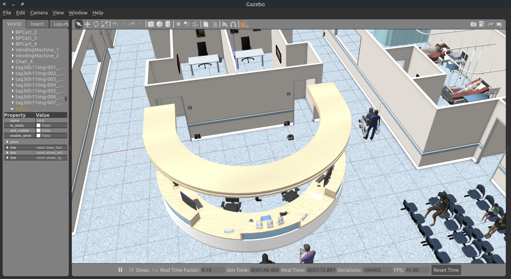
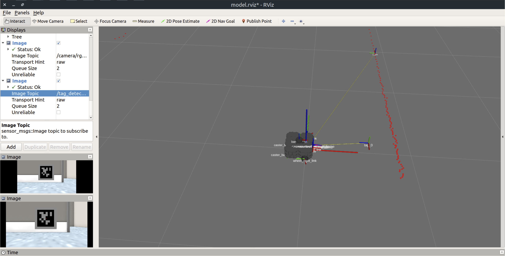
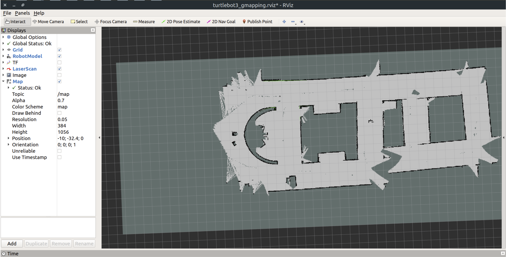
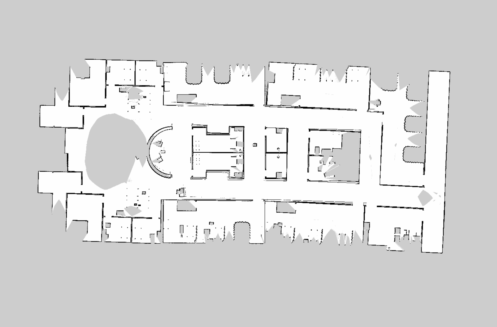
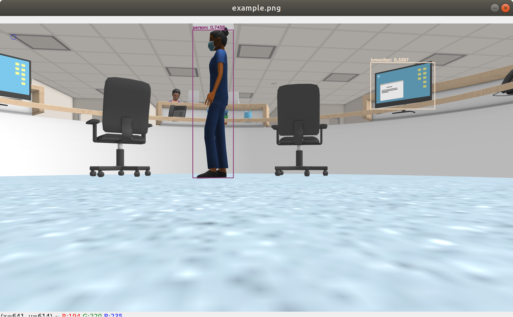

Hospital Assistant Robots (ROS, Python) (Figures in process)
Full IRCA Report

AWS Hospital World
Overview:
Worked with a team of 4 to create a solution that uses a primary
robot (robot P) to guide a visiting robot (robot S) to POIs.
Robot P:
Has access to an RGB-D camera and a Laser Scanner. It is also
assumed that this robot can map the environment with the software
it has on it. This robot cannot access the position of robot S
or any other topic private to robot S. It can communicate with
robot S only through a `/comm` topic, which is of type
`std_msgs/String`.
Robot S:
We assume that this robot has access only to an RGB camera. This
robot does not have a Laser Scanner and a software for SLAM or
Localization. It does not know the map of the Hospital as well.
Moreover, it cannot access the map information gained by robot P.
It can communicate with robot P through a topic named `/comm` which
is of type `std_msgs/String`. It can also access
its own camera topic. This robot can access its other topics as
well, like other nodes that may process the camera topic and publish
processed information on new topics.

Turtlebot3 model used for robot P and S and simulated
RGB camera input (rviz)
Challenges:
Finding a method to have robot S follow robot M efficiently.
Tuning gmapping coordinates to optimize map by robot M.
Interfacing multiple packages together to work seamlessly.
Using OpenCV image matries with ROS

Rviz view of mapped area by robot P while Tuning
parameters (Turtlebot3 gmapping package used for maping)

Rviz view of mapped area by robot P after tuning
mapping parameters
Outcome:
Robot M succesfully maps the AWS Hospital World with sufficient
accuracy to visit POIs and lead visiting robot S to POIs.
Implement a trained computer vision classifier on robot M as a
bonus task.

Implementation of pretrained YOLO classifier model in
ROS/Gazebo
Skills Learned and Individual Contributions:
ROS tools and packages
AWS resources
Integrating available software packages together and with
original code.
Implementing computer vision packages with ROS/Gazebo.
Mapping and tuning mapping parameters
Coordinate transformation and POI rosparam storage